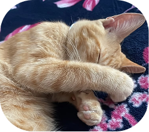
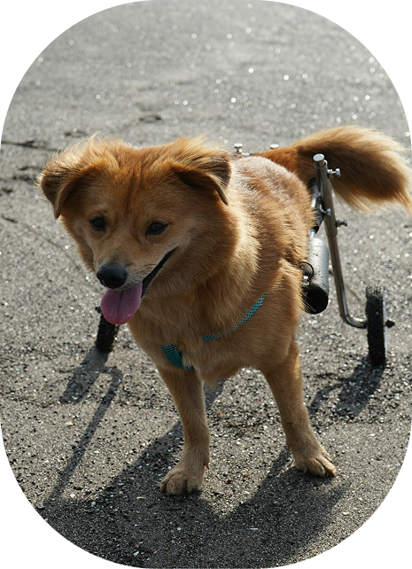

Ofereça um lugar seguro e temporário até o animal achar um lar definitivo.
-

-

Está interessado em um amigo para a família? Encontre o seu companheiro ideal e transforme uma vida!
-

Resgatou um animal e precisa de apoio para encontrar um lar ou responsável temporário?
-

Nenhum resgate é feito sozinho. Ajude a manter a nossa rede ativa para o bem-estar de bichinhos.
Prontos para dar e receber amor:
Conheça nossas patinhas!
-

Dara
15 Anos
Com um sorriso que ilumina qualquer ambiente, Dara é uma senhorinha dócil e cheia de alegria. Ela precisa de apoio com seus cuidados de rotina e sonha com um sofá quentinho para chamar de seu.
Minha Patinha! -

Maylon
7 Anos
Pequeno no tamanho, mas gigante no carinho! Maylon adora passear, fazer amizade e receber atenção. Ajude a manter suas vacinas e banhos em dia enquanto ele aguarda uma família para amar.
Minha Patinha! -

Nino
1 Ano
Um gatinho tranquilo que é especialista em tirar boas sonecas e distribuir ronronados. Seu apadrinhamento garante a ração e os cuidados veterinários que ele precisa até encontrar seu lar definitivo.
Minha Patinha!
Seja um Lar
Temporário
Muitos dos animais que são resgatados precisam de um lugar seguro, tranquilo e cheio de carinho para se recuperarem enquanto esperam pela sua família definitiva. Ao se tornar um lar temporário, você oferece mais do que um teto: oferece a oportunidade de um ser aprender o que é o aconchego de uma família.
Saiba mais
Seja parte de uma história de amor. Apadrinhe um pet!
Nem todos os animais precisam de um novo lar, mas todos merecem cuidado e carinho. Com o apadrinhamento, você pode contribuir para a alimentação, saúde e bem-estar de um pet, ajudando a transformar sua vida mesmo sem precisar levá-lo para casa.
Conheça o apadrinhamentoNão pode ser um lar temporário?
Veja outras formas de nos ajudar:
Alguns animais têm necessidades especiais e precisam de um cuidado maior, seja por falta de mobilidade, visão, audição ou porque foram encontrados em uma situação mais fragilizada. Você pode ajudar esses pets de forma exclusiva ou doar para todos.
Contribua para o projeto em geral, ajudando todos os resgatados de forma igualitária.
Escolha um pet com deficiência ou necessidades médicas contínuas para acompanhar e apoiar